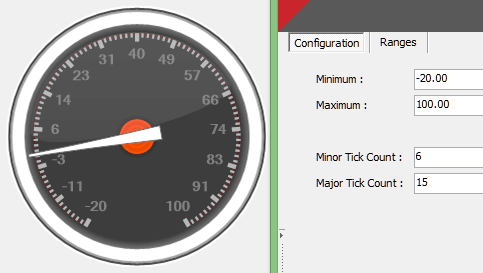

Configuring the gauge value limits and tick marks
If you like you can specify the value limits and/or the number of tick marks displayed by the gauge.
 Example:
Example:
This screenshot shows a gauge which has a customised minimum value limit and customised major and minor tick counts:
Note: The Minor Tick Count, in this case 6, specifies the number of ticks between every Major Tick.

This assumes that you have added the required gauge control to the
required graphic form.
To configure the value limits and/or tick marks for a Gauge control:
- Either right click the gauge or click the
 glyph of this control and select the Configuration option
glyph of this control and select the Configuration option
This displays the Configuration configuration dialog.
- Ensure the Configuration tab (the default tab) is selected in this dialog.
- If necessary, specify the required Minimum and/or Maximum value that the scale of this gauge should display.
- If necessary, specify the Minor Tick Count, which specifies the number of ticks marks between every Major Tick of the gauge's scale.
- If necessary, specify the Major Tick Count, which specifies the number of major tick marks on the gauge's scale.
For details on how to add a gauge control, see .